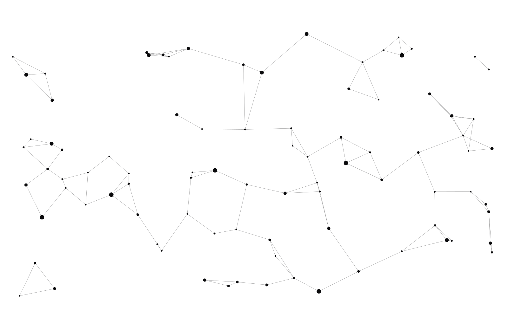

Local-first · Open source
Local-First,
Open-Source Apps
One folder of plain text and SQLite on your machine. Every tool we build shares this memory. It's open, tweakable, and yours.
Record it. Edit it. Query it.
Same memory, every time.
Record a meeting in Whispering, edit the transcript in Obsidian, then ask your AI about it. No exports, no copy-paste, because every tool points at the same folder.
Whispering
Fast, minimal transcription that works with local and cloud models.
- Choose your model
- No subscriptions
- Plain text output
epicenter.sh
Talk to your codebase from anywhere, using your own hardware.
- Local OpenCode instance
- Secure tunneling
- Query from any device
More tools are on the way. Get early access →
From zero to workspace
in 30 seconds
$ bun add @epicenter/workspace @epicenter/field
import { field } from '@epicenter/field' import { createWorkspace, defineTable } from '@epicenter/workspace' const posts = defineTable({ id: field.string(), title: field.string(), published: field.boolean(), }) const workspace = createWorkspace({ id: 'my-app', tables: { posts }, kv: {}, }) workspace.tables.posts.set({ id: 'hello', title: 'Hello World', published: true })
Principles for minds
that matter
Your tools should amplify your thinking, not fragment it.
Own your data
Everything lives as files on your disk. Delete the app, keep your work.
Use any model
OpenAI, Anthropic, local LLMs. Your choice, your API key.
Preserve authenticity
No middleman. A direct connection to your tools and models.
Free and open source
Audit the code, fork it, make it yours.
Blazing fast
Built with Rust and Svelte 5, tuned for speed.
Built on tomorrow's stack
CRDTs and local-first architecture, ahead of the rest of the web.
One architecture,
endless possibilities
One folder. All your data.
Everything lives in a single directory on your machine: plain text files and SQLite databases you actually own.
Local-first by default
Your transcripts, notes, and ideas never leave your machine unless you want them to. No cloud lock-in.
Works with tools you already use
Because everything is plain text and SQLite, your whole workspace is compatible with the tools you already love.
Infinite workflows,
zero lock-in
Your workspace plays nicely with the tools you already have open: edit in VS Code, search with grep, version with Git.
Obsidian
Edit your notes in your favorite knowledge tool.
grep & ripgrep
Search the whole workspace with fast Unix tools.
Git
Version control your ideas, notes, and transcripts.
VS Code
Open any file in your preferred code editor.
Claude & OpenCode
Supercharge your workflow with AI that reads your context.
Your favorite tool
Plain text and SQLite mean your tools work too.
Frequently asked
questions
How is this different from Obsidian?
Obsidian is a Markdown editor with sync. Epicenter is a local-first storage substrate: multiple apps share the same CRDT-backed data folder. Your notes, transcripts, and chat histories all live together and sync conflict-free.
Is my data encrypted?
Epicenter Cloud doesn't encrypt your workspace data. The sync server is a trusted relay that reads plaintext, which is what makes server-side search and AI work. If you want a server that can't read your data, self-host it, then the only machine holding it is yours. You can also run entirely offline.
Can I self-host?
Yes. The sync server is open source and runs on Cloudflare Workers or any WebSocket-compatible host. You can also run entirely offline; sync is optional.
What happens if I stop using Epicenter?
Your data is plain text and SQLite files on your disk. Open them with any text editor, query them with any SQLite tool. No export needed, the files are the product.
Software for people who think
We're building an alternative to apps that fragment your thinking across a dozen cloud services. Epicenter is for people who read deeply, write to think, and build to understand.